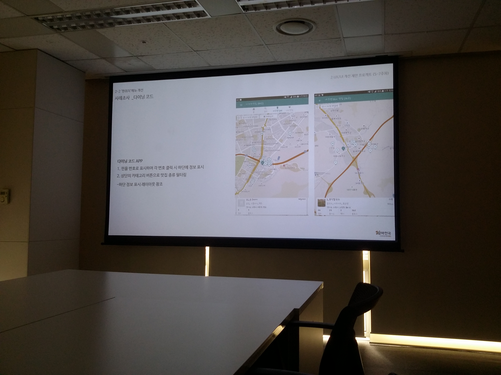

캡스톤 디자인 주간 보고서 [8주차]
| 팀 명 | 11팀 |
|---|---|
| 과제명 | 알바천국 감성 푸쉬 서비스 기획 |
| 회의날짜 | 2016년 10월 18일 ( 10:00 ) ~ 2016년 10월 18일 ( 15:00 ) |
| 참석자 | 성명 | 역할 | 서명 |
|---|---|---|---|
| 안가은 | 회의록 작성, 팀장 | ||
| 김윤신 | 기획 | ||
| 박채원 | 기획 | ||
| 조영지 | 기획 |
| 주간 보고 내용(한주의 내용을 간단하게 정리) |
|---|
|
미디어 윌의 알바천국 회사를 방문하였습니다.  먼저, 지난 주 저희가 진행한 지도 앱에 대한 벤치마킹 및 시안에 대한 문서를 발표하였습니다. 이후 저희가 진행했던 내용을 토대로 현 '현위치' 페이지 개선에 필수로 들어갈 버튼 및 기능들의 리스트를 정리하였습니다. 해당 버튼 및 기능들은 다음과 같습니다.
 저희가 지난 주 작성한 시안 4개의 장점을 꼽아 시안 스케치를 진행하였습니다. |
| 다음 진행 방향 및 계획 |
|---|
| 사용자 경로 조사(User-tracking) 및 테스트 |
* 주차별 주간 보고서를 필히 제출